本記事の技術ポイント
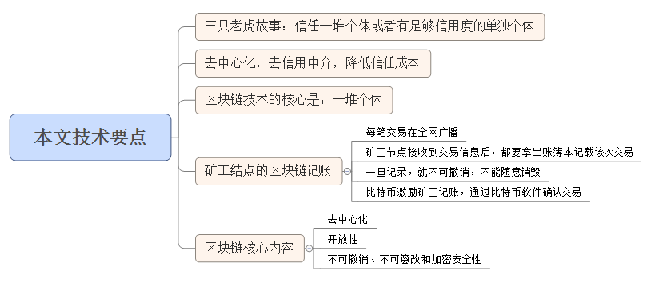
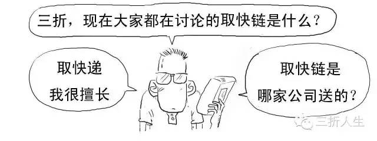
取快链？君が言いたいのはブロックチェーン（区块链）のことだろ？
ブロックチェーンを説明するために、まず物語を一つ紹介しよう。
「三人成虎（さんにんせいこ）」の故事を聞いたことがあるだろう？
仮に一人の人が君に「大変だ、通りに虎がいるぞ」と教えたら、信じるか？
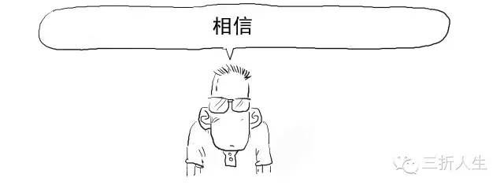
おいおい、なんで想定外の返しをするんだよ。「信じない」って言うべきだろ！
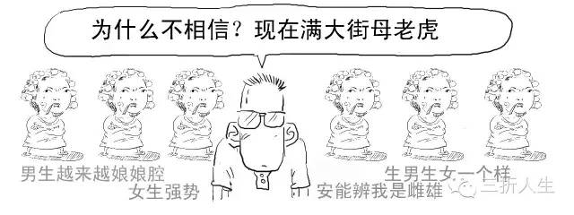
やり直し！俺たちが言ってるのは本物の虎だ！
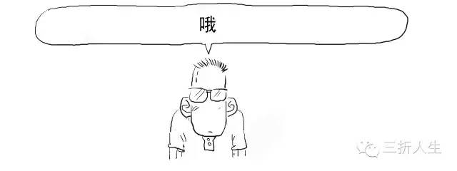
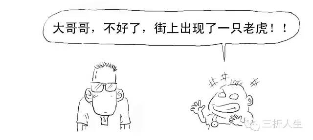
よし！とても良い！！主演男優賞クラスの演技だ！！！
続けて、今度は大勢の人がこのことを教えたらどうだ？
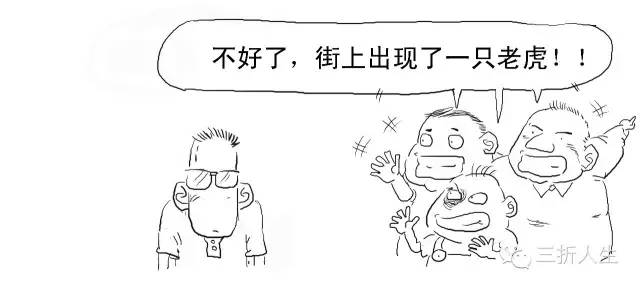
また別のシチュエーションに変えてみよう。
もし徳が高く声望があり、君がとても信頼している年配者がこのことを教えたら、君はどう思う？
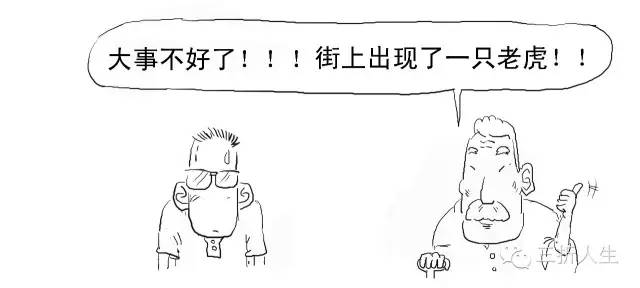
そう、これがいわゆる「信頼の力」だ。君は十分な信用度を持たない単独の個人は信じないが、信じるのは多数の個人または十分な信用度を持つ単独の個人。
現実社会では、銀行こそがこの十分な信用度を持つ個体（中心）だ。
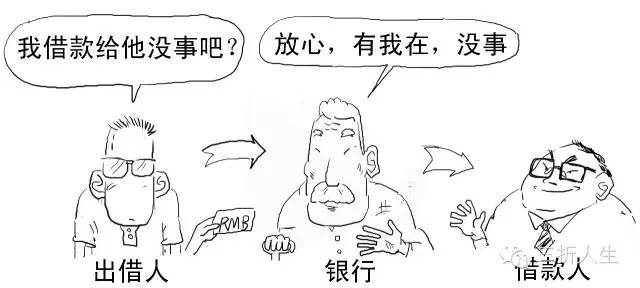
支付宝（アリペイ）もこれに似た機能だ。
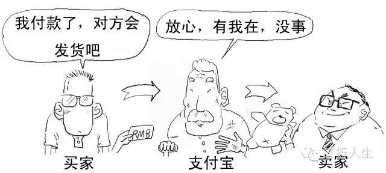
しかし、銀行や支付宝（アリペイ）などを信用仲介者とすることにはコストがかかり、我々一般大衆はこの膨大な信用コストを負担することになる。だからこそ金融業界が最も儲かる業界となり、支付宝を保有する蚂蚁金服（アント・フィナンシャル）の利益は驚異的になっているのだ。
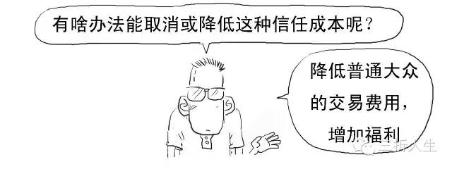
銀行などの中心機関による信用保証（信用背书）を排除したいのか？
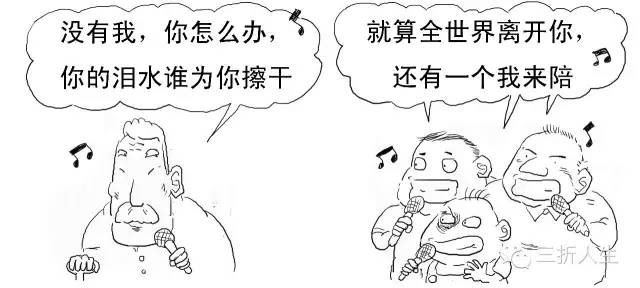
それなら、先ほど言及した「多数の個人」を使えばいい。これもブロックチェーン技術の核心だ。
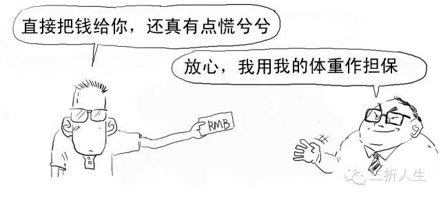
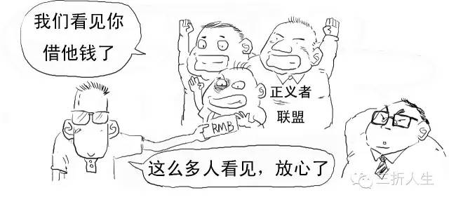
ブロックチェーンは本質的に、信頼の問題を解決し、信頼コストを下げるための技術的ソリューションであり、目的は脱中心化と信用仲介者の排除だ。
ブロックチェーンはビットコインの基盤技術だ。
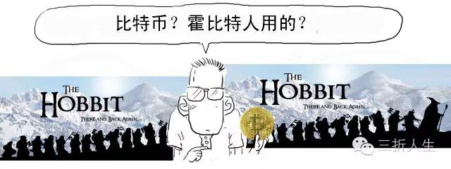
ビットコイン（BitCoin）の概念は、元々2009年に中本聡（サトシ・ナカモト）によって提唱されたもので、デジタル通貨だと思えばよい。
ビットコインの取引を例に、ブロックチェーンが具体的にどのように機能するかを見てみよう。
1、すべての取引をネットワーク全体にブロードキャストする。ネットワーク全体に有効と認めさせるには、すべてのノードにブロードキャストしなければならない。
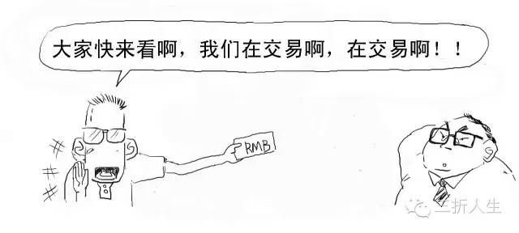
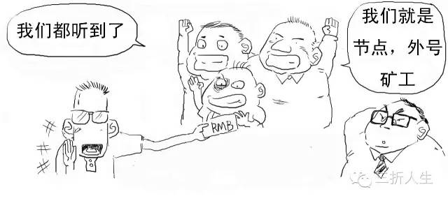
2、マイナーノードは取引情報を受け取ったら、帳簿を取り出してその取引を記録しなければならない。
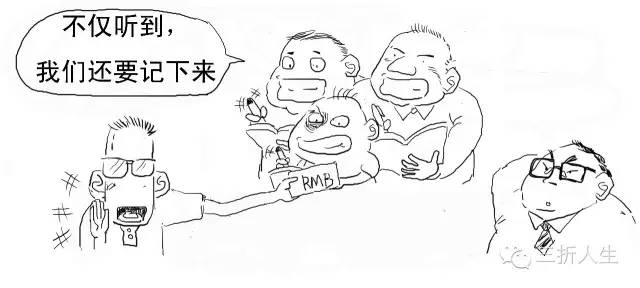
一度記録すると、取り消しはできず、勝手に消去することもできない。
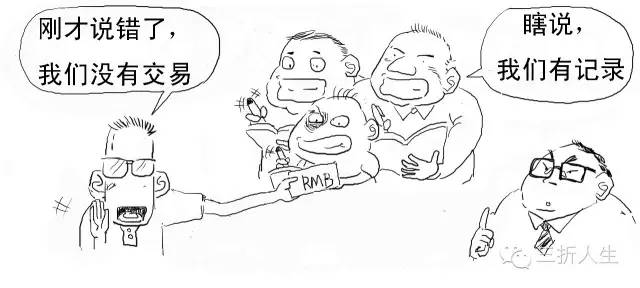
マイナーノードは、コンピュータで動作するビットコインソフトウェアを通じて取引を確認する。
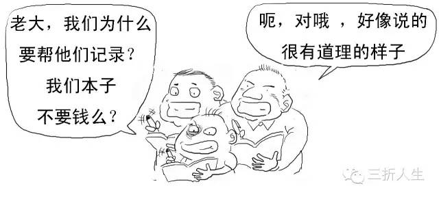
マイナーのサービスを奨励するため、記録・確認した取引に対して、システムはマイナーに25ビットコインを報酬として与える。（この報酬額は、システムによって4年ごとに半減するよう設定されている）
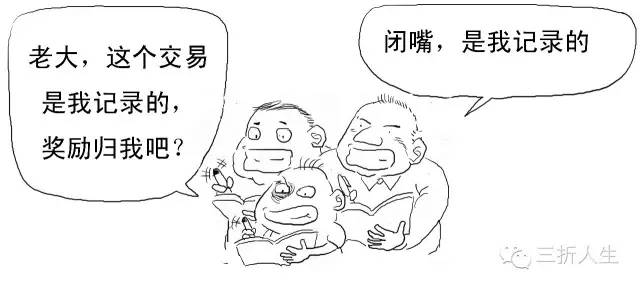
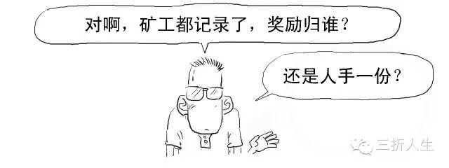
報酬は一つだけなので、誰が一番早く記録するかの勝負だ。
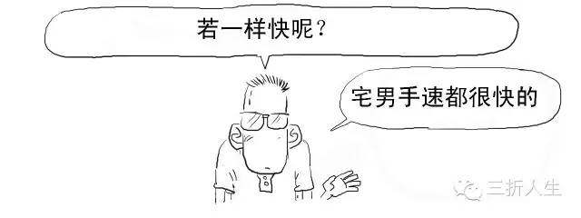
このような事態を減らすため、システムは10分間の計算問題を出題し、最も早く解を導き出した者が記帳権を獲得し、報酬を得られる。
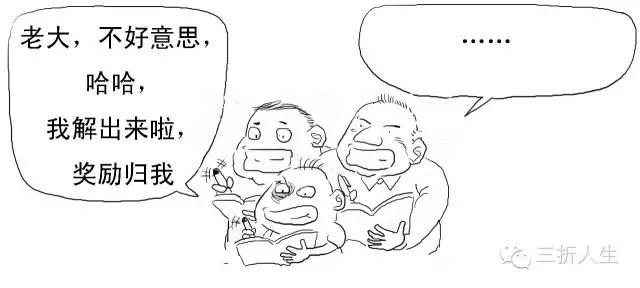
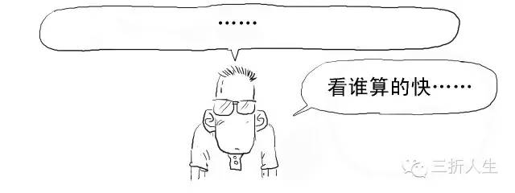
そういえば、ここで徐匯区の幼稚園から小学校への受験で出たと言われる計算問題を皆さんに見せよう。
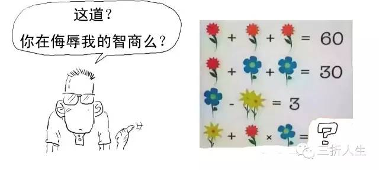
焦らないで、やってみてください。私は最初は間違えましたから。
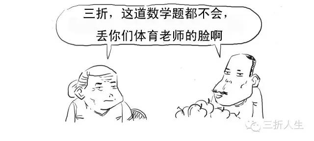
%&*%#@%、まいったな、反論の余地がない。
計算結果をコメント欄に書いてください。答えは次回発表します。
話が脱線したので、本題に戻ろう。
前述のブロックチェーンで使われるアルゴリズムは単純な計算問題ではなく、ハッシュ（Hash）アルゴリズムを使用している。
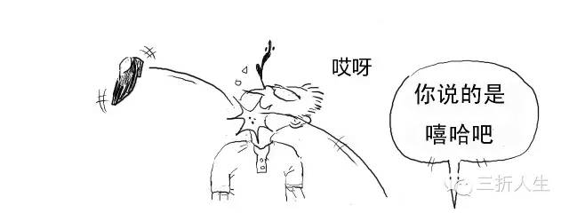
ハッシュは暗号学における古典的な技術で、データ内容が改ざんされていないかを検証するために使われる。
3、記帳権を得たマイナーはその取引をネットワーク全体にブロードキャストし、帳簿を公開する。他のマイナーはこれらの帳簿を照合・確認する。
取引が6回以上の確認を得ると、正式に記録されたことになる。
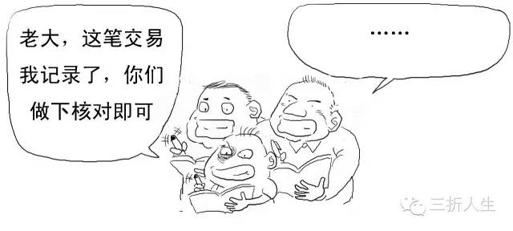
マイナーは記録する際、その取引にタイムスタンプを押し、完全な時間のチェーンを形成する。
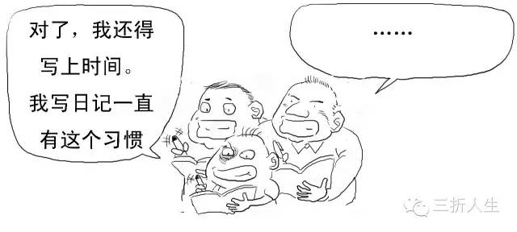
4、他のマイナーが帳簿記録をすべて確認し間違いがないと認めたら、その記録は合法的に確認され、マイナーたちは次の記帳権獲得の争奪戦に突入する。
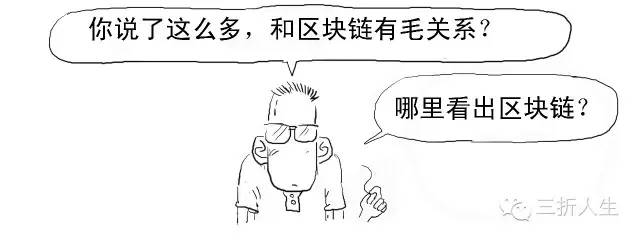
マイナーの各記録は1つのブロック（block）であり、タイムスタンプが押される。新しく生成された各ブロックは厳密に時間の線形順序に従って進み、不可逆的なチェーン（chain）を形成する。だからブロックチェーン（Blockchain）と呼ばれるのだ。
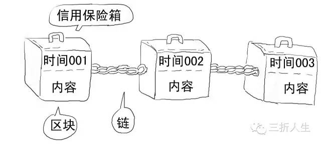
さらに、各ブロックは前のブロックのハッシュ値を含んでおり、ブロックが時間順に連結されると同時に改ざんされていないことを保証している。
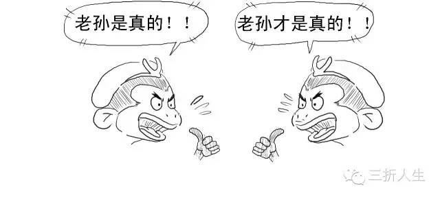
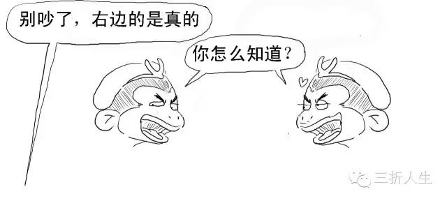
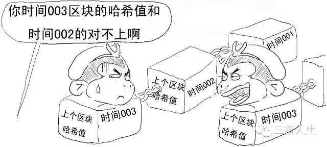
この時点でブロックチェーンの元の定義を見れば理解できるだろう。ブロックチェーンは分散型データベースであり、暗号学的手法を用いて関連付けられて生成された一連のデータブロックである。各データブロックはネットワーク取引情報を含み、その情報の有効性の検証と次のブロックの生成に使用される。
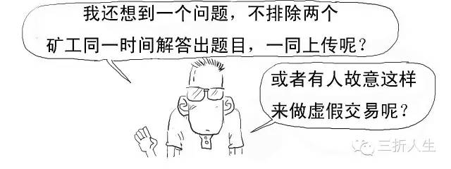
もし二人が同時にアップロードした場合、その確率は非常に小さいが、発生した場合は、最後にどちらのブロックチェーンがより長いかを見て、短い方は無効となる。これがブロックチェーンにおける「二重支払い問題」（同じお金を2回使うこと）だ。
偽の取引を作ろうとしても、ネットワーク全体の51%以上のマイナーを説得して特定の帳簿を変更させない限り、改ざんはすべて無効だ。
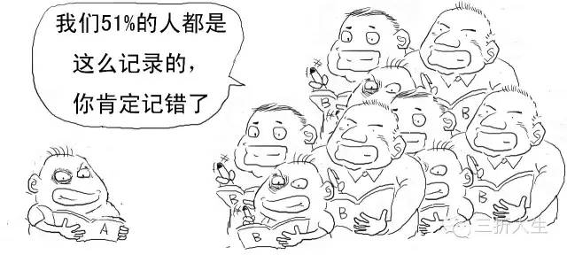
ネットワークの参加者が多ければ多いほど、偽造が実現する可能性は低くなる。
これも集団による維持・監視の優位性であり、偽造コストを最大化する。
51%の人を説得して偽造させるのは、めっちゃめっちゃ難しい。
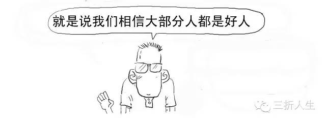
その通り。
さて、まとめると、ブロックチェーンには主に以下の核心的な内容がある。
1、脱中央集権化（非中央集権化）
これはブロックチェーンの破壊的特徴であり、中央機関や中央サーバーは存在せず、すべての取引は各人のパソコンやスマートフォンにインストールされたクライアントアプリケーション上で行われる。ピアツーピア（P2P）の直接的なやり取りを実現し、リソースを節約するだけでなく、取引を自律的かつ簡素化し、中央集権的な代理者に制御されるリスクも排除する。
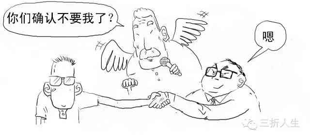
2、開放性
ブロックチェーンは公共の記帳のための技術的ソリューションと理解でき、システムは完全にオープンで透明であり、帳簿はすべての人に公開され、データ共有を実現し、誰でも帳簿を確認できる。
開放の効果はだいたいこんな感じだ：
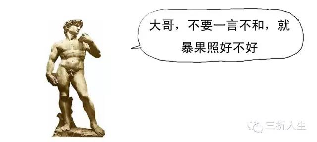
3、取消不能、改ざん不可能、そして暗号による安全性
ブロックチェーンは一方向ハッシュアルゴリズムを採用しており、新しく生成された各ブロックは厳密に時間の線形順序に従って進む。時間の不可逆性と取消不能性により、ブロックチェーン内のデータ情報を侵害・改ざんしようとするいかなる試みも追跡されやすく、他のノードから排斥されるため、偽造コストが極めて高くなり、関連する不法行為を制限できる。
原作者：三折人生
原文URL：http://if.pedaily.cn/news/201608/20160830161298426.shtml